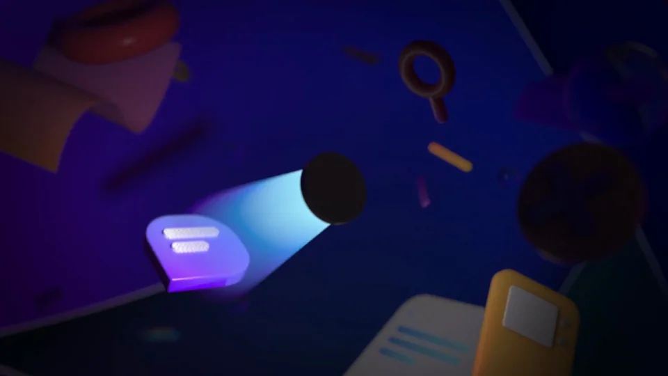
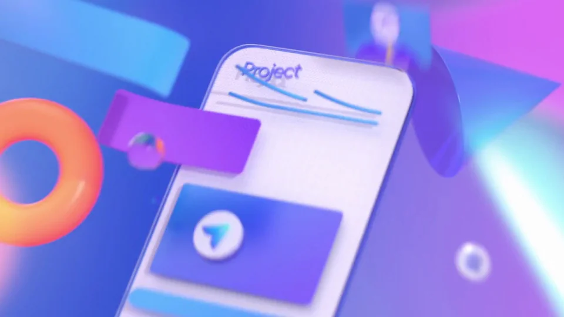
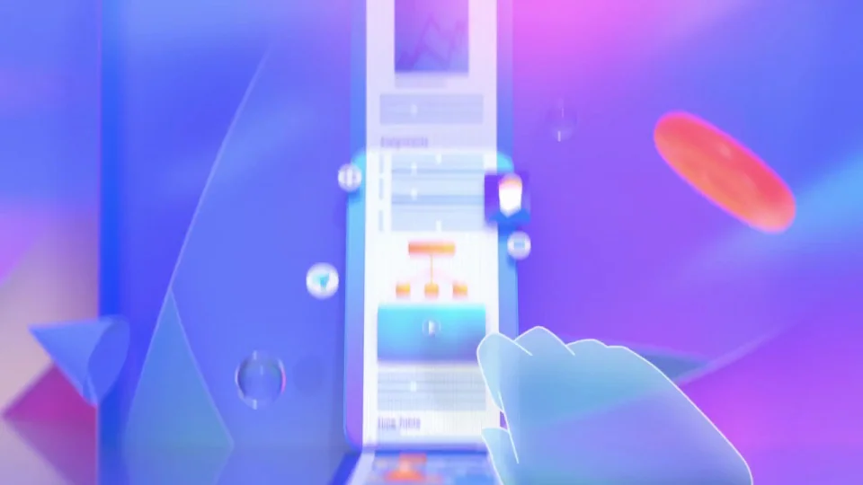
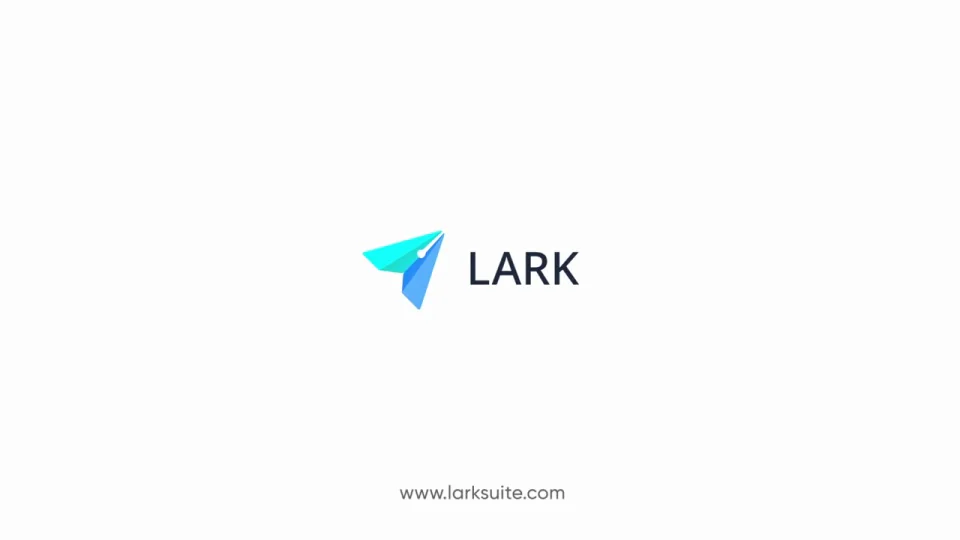

Lark / V366
Magic Share
同一份工作在桌面、平板与手机之间流动；把文档、图表和协作者保留在转场中，最后收成品牌纸飞机。
构图与编排 可播放 · 可替换内容
整体编排规则示例
查看 HTML 源码
<!doctype html><html lang="zh-CN"><meta charset="utf-8"><meta name="viewport" content="width=device-width,initial-scale=1"><title>Magic Share · sequence</title><style>html,body{margin:0;width:100%;height:100%;overflow:hidden;background:#eceeff}canvas{display:block;width:100%;height:100%;object-fit:contain}</style><body data-mode="sequence"><canvas width="1000" height="600"></canvas><script src="data.js"></script><script src="common.js"></script><script src="scene.js"></script><script src="bridge.js"></script></body></html>画面元素显示器平板文档协作者头像手机图表共享窗口纸飞机
MOTION LANGUAGE
动作与构图
局部动作 · 构图规则
01
换设备，工作内容继续
换设备，工作内容继续规则示例
查看 HTML 源码
<!doctype html><html lang="zh-CN"><meta charset="utf-8"><meta name="viewport" content="width=device-width,initial-scale=1"><title>Magic Share · sequence</title><style>html,body{margin:0;width:100%;height:100%;overflow:hidden;background:#eceeff}canvas{display:block;width:100%;height:100%;object-fit:contain}</style><body data-mode="clip" data-start="0" data-end="6"><canvas width="1000" height="600"></canvas><script src="data.js"></script><script src="common.js"></script><script src="scene.js"></script><script src="bridge.js"></script></body></html>显示器转向平板时保留项目名称、列表和头像。设备可转动，界面区域跟随设备平面；浅蓝空间承托白色屏幕，粉色只用于设备或局部材质。
02
把文档拆成可协作的层
把文档拆成可协作的层规则示例
查看 HTML 源码
<!doctype html><html lang="zh-CN"><meta charset="utf-8"><meta name="viewport" content="width=device-width,initial-scale=1"><title>Magic Share · sequence</title><style>html,body{margin:0;width:100%;height:100%;overflow:hidden;background:#eceeff}canvas{display:block;width:100%;height:100%;object-fit:contain}</style><body data-mode="clip" data-start="9" data-end="15"><canvas width="1000" height="600"></canvas><script src="data.js"></script><script src="common.js"></script><script src="scene.js"></script><script src="bridge.js"></script></body></html>长文档展开，图片、工具、图表和头像从同一页面分出。层间留距离，头像沿编辑目标移动，手势或游标只在需要指明操作时出现。
03
多人参与后再收回项目总览
图表编辑与视频窗口叠合成群，最后回到项目表格。让同一头像在不同视图继续出现，避免把协作写成陌生窗口的连续堆积。
04
用折叠动作结束
窗口与文档逐渐减少，几何纸片合成飞机，飞到品牌位置。新主题可换协作内容和设备，但结束符号应从前面用过的形状产生。
SEQUENCE
段落与节奏
点击段落，定位到上方编排示意。




画面参考 · 离散静帧
KEEP THE RELATIONSHIPS
制作其他主题
- 替换项目、协作者与终端，保留同一内容跨设备及最后折叠。
制作约束
显示器 / 平板 / 文档 / 协作者头像 / 手机 / 图表 / 共享窗口 / 纸飞机
- 显示器转向平板时保留项目名称、列表和头像。设备可转动，界面区域跟随设备平面；浅蓝空间承托白色屏幕，粉色只用于设备或局部材质。
- 长文档展开，图片、工具、图表和头像从同一页面分出。层间留距离，头像沿编辑目标移动，手势或游标只在需要指明操作时出现。
- 图表编辑与视频窗口叠合成群，最后回到项目表格。让同一头像在不同视图继续出现，避免把协作写成陌生窗口的连续堆积。
- 窗口与文档逐渐减少，几何纸片合成飞机，飞到品牌位置。新主题可换协作内容和设备，但结束符号应从前面用过的形状产生。